.--. .--. .--. .--.
.-( ). ( ). .-( ).( ).
(___.__)__)(__.__)__) (___.__)__) (____) 2025.02.18 - 03.05 챔버 CHMBR, 서울 성북구
“공동주택(共同住宅) 주민으로 살아남기!” 주민제안배밭골 곡괭이 - 박희수 이지원 |
||
|---|---|---|
|
1. 서문 |
(b1997) 박희수는 집-일터-작업실을 오가며 노후한 주택의 마당 같은 곳에서 그리기의 대상을 발견하고,
물감의 재료가 될 버려진 물건을 탐색한다. 낡은 건물의 마당에는 주차금지 팻말, 텃밭과 화분 등이
뒤엉켜, 내 땅도 네 땅도 아닌 애매한 영역을 나누고 점유한다. 이번 전시에서는 성북구에서 습득한 벽돌,
시멘트 덩어리, 아스팔트 조각, 양변기, 토분 등을 분쇄하여 제조한 유화물감을 재료로, 경계와 영역의
풍경을 회화의 가운데로 옮겨 보고자 한다.
|
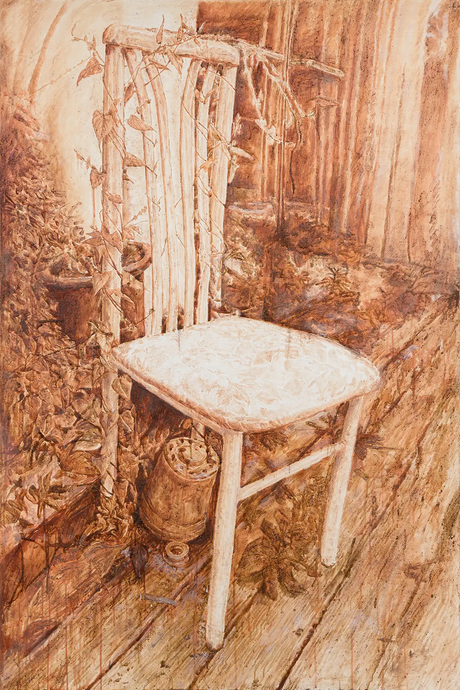
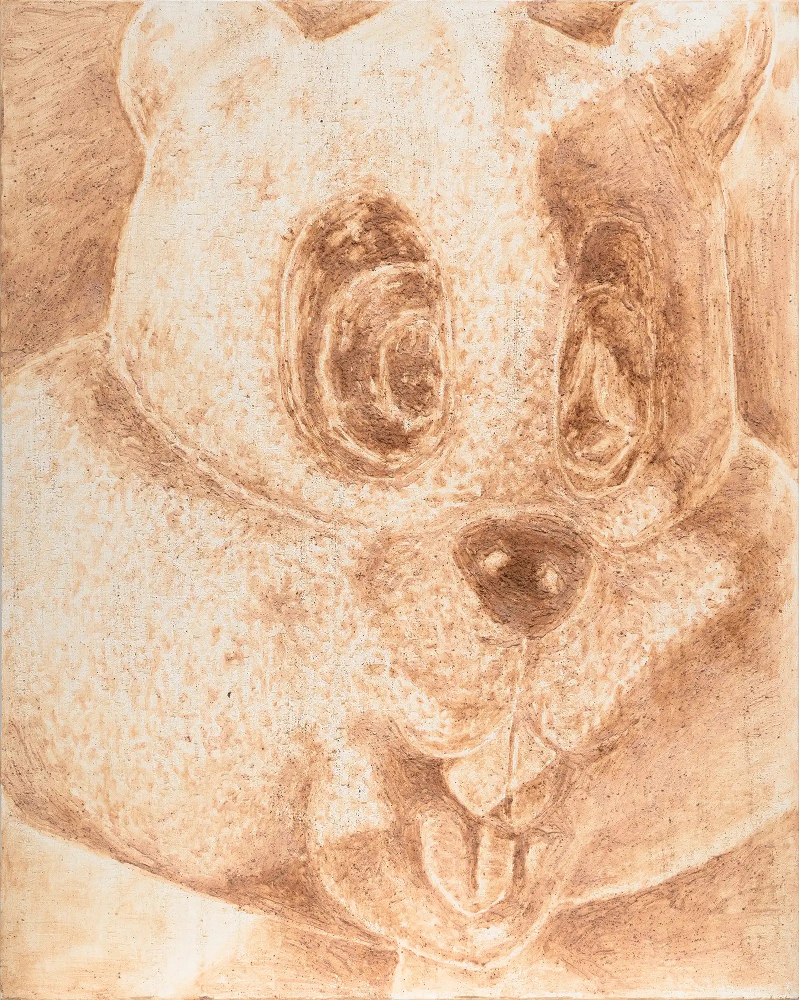
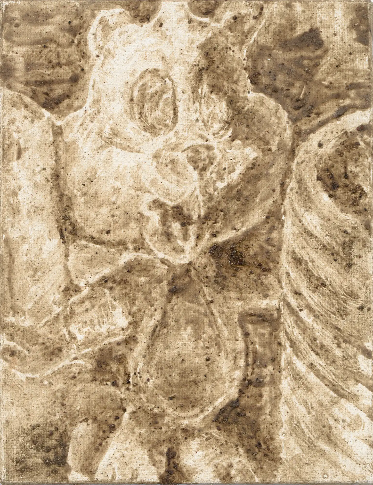
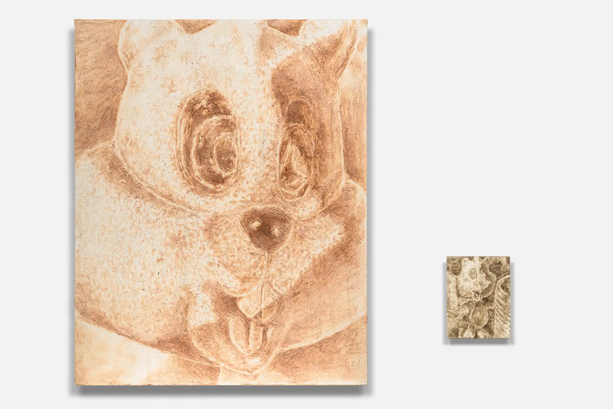
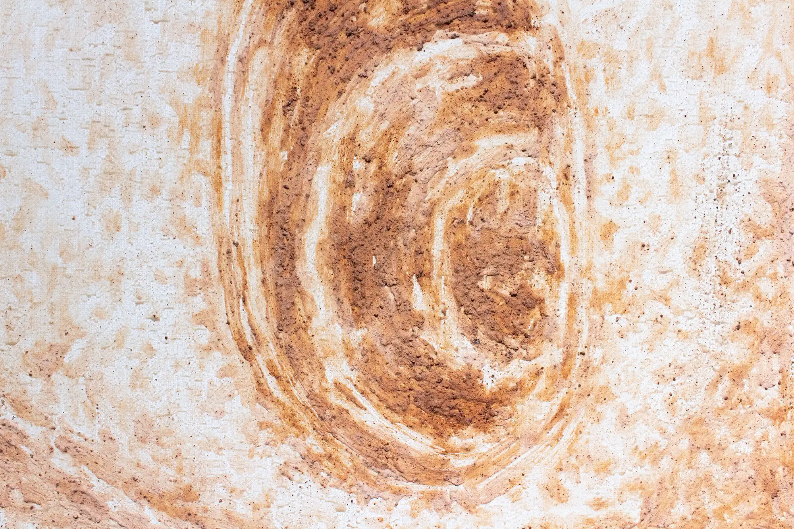
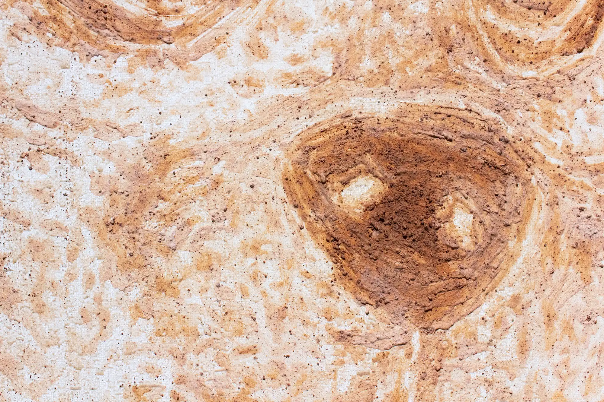
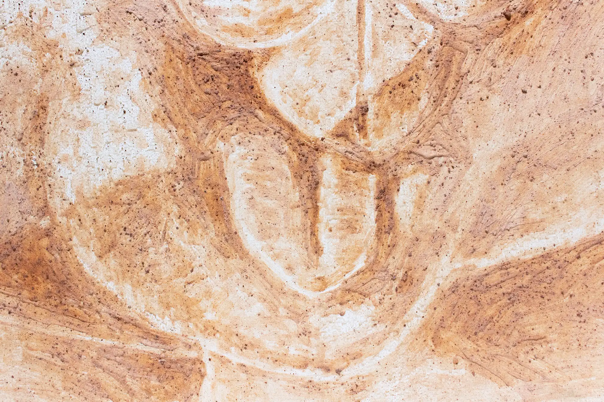
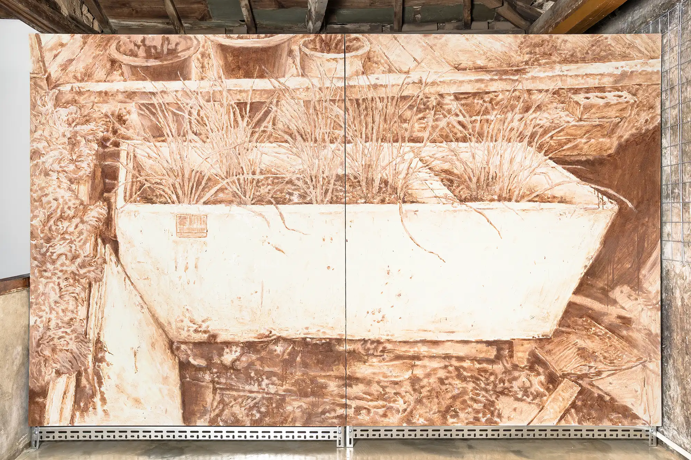
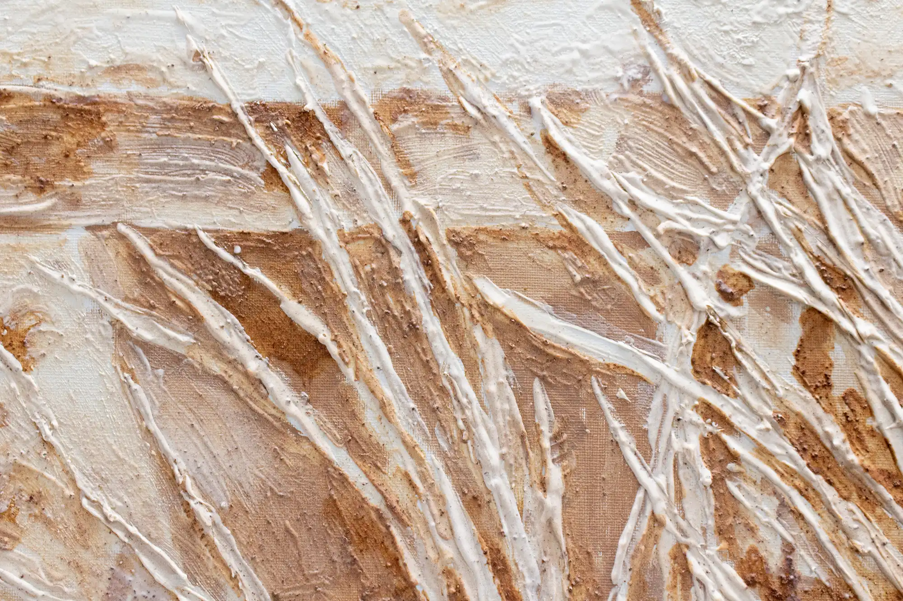
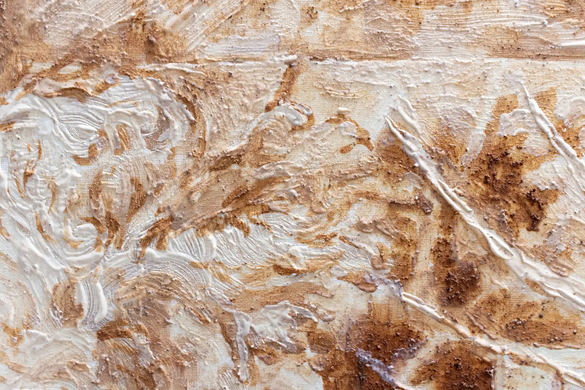
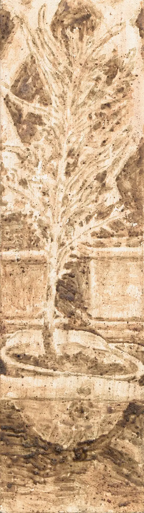
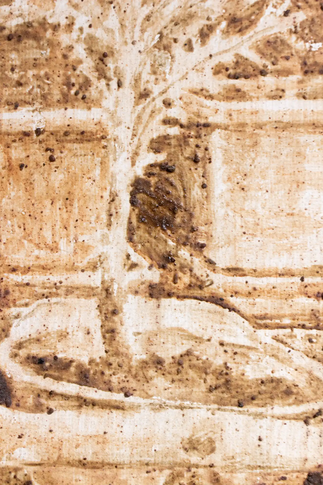
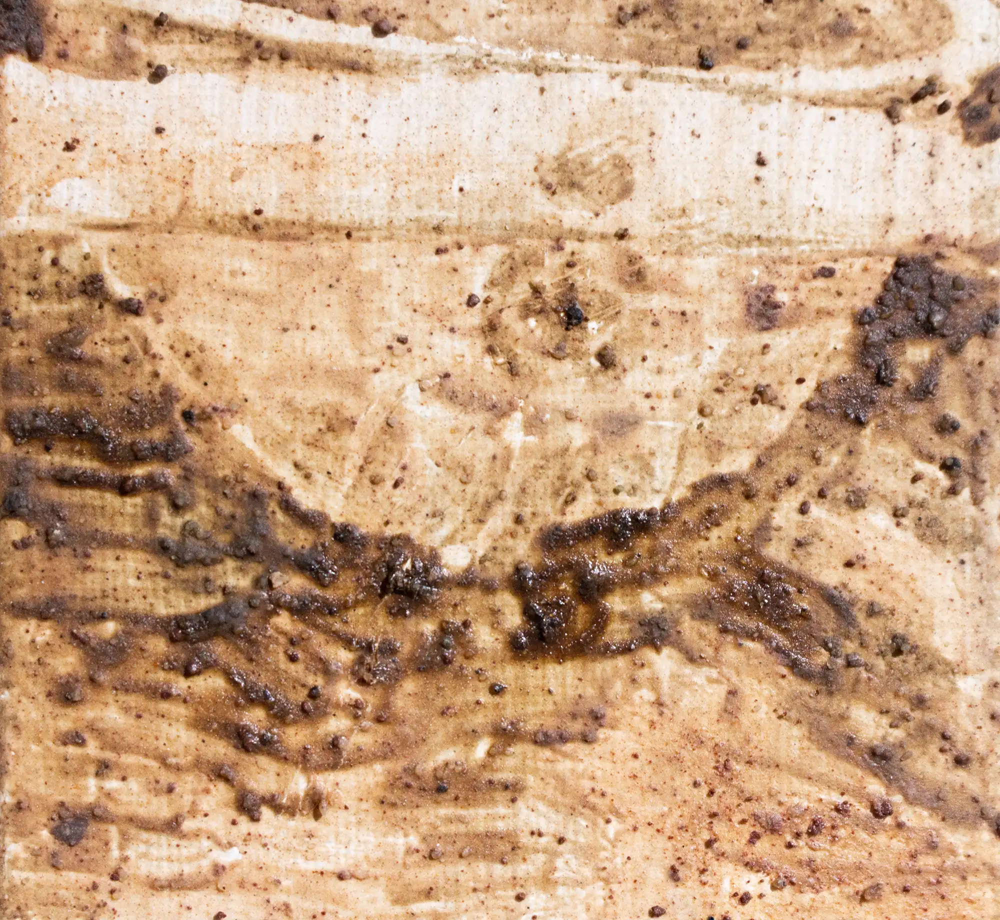
|
====
!!!!
==========================
%%%%%%%%%%%%%%%%%%%%%%%%%%%%%%
%%%%%%%%%%%%%%%%%%%%%%%%%%%%%%%%%%
%%%%%%%%%%%%%%%%%%%%%%%%%%%%%%%%%%%%%%
|| _____ _____ ||
|| | | | | | | ||
|| |-|-| |-|-| ||
|| ##### ##### ||
|| _____ ____ _____ ||
|| | | | @@@@ | | | ||
|| |-|-| @@@@ |-|-| ||
|| ##### @@*@ ##### ||
|| @@@@ ||
******************____****************
**************************************
|
||
후원 성북문화재단 |
||